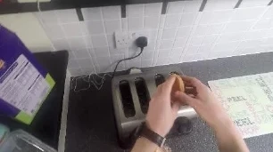
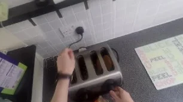
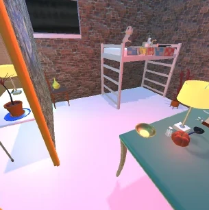
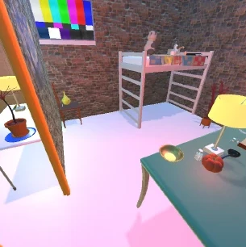

Real interventions are soft
The question
Real-world interventions rarely change just one thing: they change what we want, and bring side effects we do not. Can a model still learn the true causes behind what it sees?
Observe
Heart rate rises with exercise.
Hard intervention
A beta-blocker under controlled conditions breaks the effect: exercise no longer raises heart rate.
Soft intervention
With caffeine or other stimulants around, the effect is reduced but not removed.
Background
Recovering the true causal variables behind images, video or sensor data requires interventions. Most implicit methods assume hard interventions, which fully cut a variable off from its causes. In practice, interventions are usually soft: they change how a mechanism works without severing its dependencies, and bring subtle, ambiguous side effects.
A structural causal model links causal variables through mechanisms arranged in a directed acyclic graph. Interventions, deliberate changes to a variable, reveal which way cause and effect run.
Implicit models, which learn causal dependencies without estimating a causal graph, avoid the optimization traps of explicit methods. The open question was how to make them work when interventions are soft.
Hard, soft, explicit, implicit
Sets a variable to a fixed value and cuts it off from its causes, as in a randomized trial.
do(Z = z)Changes a mechanism but keeps the variable's dependence on its causes. Closer to real life, harder to learn from.
mechanism shiftLearn the causal graph and the representations together, which can make training unstable.
graph + latentsWrite each causal variable as a function of exogenous noise and never estimate the graph.
solution functionsA switch for unwanted change
ICRL-SM introduces a causal mechanism switch variable, V, that captures the unwanted shifts a soft intervention causes, such as a change in camera angle while someone opens a cabinet. Isolating these lets the model focus on the variation that reflects the underlying causal structure.
How it works
- 1Encode the pairA variational autoencoder reads the before and after images.
- 2Find the switchThe difference between them is encoded into the switch V.
- 3SolveSolution functions map noise and V to the causal variables, with no graph to learn.
- 4PredictThe action and the object are predicted from the changed causal variable.
Under stated assumptions, the causal variables are identified up to reparameterization.
Robust beyond the theory
Tested on Causal-Triplet, real image pairs taken before and after an action on an object, in real kitchens (Epic-Kitchens) and simulated homes (ProcTHOR). ICRL-SM predicts the action best, even though real data breaks some of its assumptions.
Epic-Kitchens · real kitchens

Before
AfterProcTHOR · simulated homes

Before
Afteraction accuracy, against 0.67 for the best other method
The best of the six other methods on this test
action accuracy, against 0.62 for the best other method
Real kitchen videos, with a moving camera
tests won, and tied on the fourth (Epic-Kitchens objects)
3 explicit and 3 implicit, five seeds each
Accuracy of predicting the action or object from the changed causal variable, averaged over five seeds; higher is better.
Experiments on synthetic graphs also show where the approach reaches its limits: when soft interventions change mechanisms very strongly, the switch variable needs more supervision to capture them.
What I contributed
- Mentored a PhD student on experimental design, data preprocessing, implementation and evaluation.
- Guided methodology, including statistical modeling, causal inference and representation learning architectures.
- Collaborated with partners to define objectives and integrate feedback into model development.
- Supported drafting, revision and submission of the journal publication, ensuring rigor and reproducibility.
- Co-authored the work and presented it to technical and applied audiences.